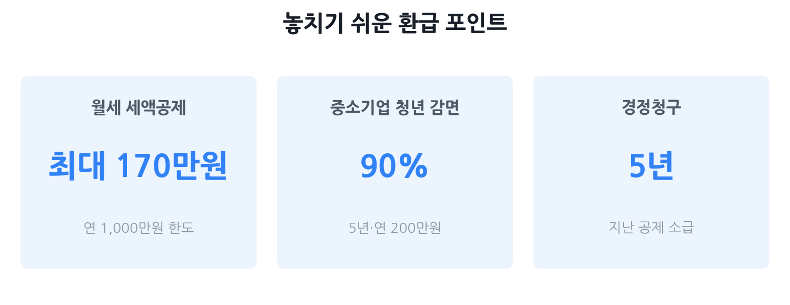

연말정산 환급 많이 받는 법 2026
— 사회초년생이 놓치기 쉬운 공제 총정리
연말정산은 1년에 한 번, 내가 실제로 낸 세금과 내야 할 세금을 맞춰보는 정산입니다. 공제를 챙기면 돈이 돌아오고, 놓치면 그냥 국가에 기부한 셈이 됩니다. 특히 월세 사는 사회초년생은 월세 세액공제·중소기업 소득세 감면 등 놓치기 쉬운 항목이 많아 제대로 챙기면 수십만~수백만 원 환급이 가능합니다. 이 글은 2025년 귀속(2026년 1~2월 신청) 기준의 최신 수치를 담았습니다.
- 취업 1~3년차로 월세 거주 중이고 환급을 더 받고 싶은 분
- 연말정산 간소화 자료 외에 추가로 챙길 공제가 있는지 궁금한 분
- 중소기업에 다니는데 소득세 감면 신청을 했는지 모르는 분
- 과거에 놓친 공제가 있어 경정청구로 돌려받고 싶은 분

연말정산 환급 흐름과 일정
연말정산은 매년 1월 홈택스 간소화 서비스가 열리면서 시작됩니다. 2025년 귀속 기준 주요 일정은 다음과 같습니다.
| 시점 | 내용 |
|---|---|
| 2026년 1월 15일~ | 홈택스 연말정산 간소화 서비스 오픈(조회는 1월 20일부터 순차적) |
| 2026년 1~2월 | 회사에 공제 서류 제출 → 회사가 정산 처리 |
| 2026년 3월 10일 | 회사의 국세청 원천징수이행상황신고서 제출 마감 |
| 2026년 2~3월 급여일 | 환급금 또는 추가 납부액이 급여에 반영 |
| 2026년 5월 1일~6월 1일 | 종합소득세 확정신고 기간 — 연말정산 누락분 추가 신청 가능 |
월세 세액공제 — 자격·공제율·한도·신청법
월세 사는 사회초년생이 가장 먼저 확인해야 할 항목입니다. 월세를 내면 세금을 직접 깎아주는 세액공제를 받을 수 있어, 잘 챙기면 연 최대 170만 원이 환급됩니다.
자격 요건 — 나도 되나?
- 소득 기준: 총급여 8,000만 원 이하 (종합소득금액 7,000만 원 이하)
- 주택 기준: 국민주택 규모(전용 85㎡) 이하 또는 기준시가 4억 원 이하 주택 (주거용 오피스텔·고시원 포함)
- 인적 요건: 과세기간 종료일(12월 31일) 기준 무주택 세대의 세대주 또는 세대원
- 주소 일치: 임대차계약서의 주소와 주민등록등본 주소가 동일해야 함
공제율과 한도 (2025년 귀속 기준)
| 총급여 구간 | 공제율 | 연간 한도 | 최대 세액공제액 |
|---|---|---|---|
| 5,500만 원 이하 | 17% | 연 1,000만 원 | 170만 원 |
| 5,500만 원 초과 ~ 8,000만 원 이하 | 15% | 연 1,000만 원 | 150만 원 |
공제 한도가 이전(750만 원)에서 1,000만 원으로 상향되었고, 소득 기준도 종전 7,000만 원에서 8,000만 원으로 확대되었습니다(2024년 귀속부터 적용). 월세가 연 1,000만 원(월 약 83만 원)에 못 미친다면 실제 납부 월세 전액이 공제 대상입니다.
신청 방법
- 홈택스 간소화 서비스에서 월세 납부 내역이 자동 조회되지 않는 경우가 많으므로, 직접 서류를 준비해야 합니다.
- 준비 서류: ① 임대차계약서 사본 ② 주민등록등본 ③ 월세 지급 증빙(계좌이체 확인서, 무통장입금증 등)
- 회사 연말정산 담당자에게 서류 제출 또는 홈택스에서 세액공제 신청서를 직접 작성해 제출
월세 세액공제 vs 현금영수증 소득공제
집주인에게 요청해 월세를 현금영수증으로 처리하면 신용카드 소득공제 항목으로도 공제받을 수 있습니다. 그러나 월세 세액공제와 현금영수증 소득공제는 중복 적용이 불가합니다. 일반적으로 세율이 같다면 세액공제(15~17%)가 소득공제(세율×공제율)보다 유리한 경우가 많으니, 본인 상황에 맞게 선택하세요.
사회초년생이 놓치기 쉬운 공제 7가지
연말정산 간소화 서비스에 자동으로 잡히지 않거나, 별도 신청이 필요해 모르고 지나치는 항목들입니다.
① 중소기업 취업자 소득세 감면 — 최대 연 200만 원, 5년간
중소기업에 취업한 청년(만 34세 이하)은 취업일로부터 5년간 소득세의 90%를 감면받을 수 있습니다. 연간 감면 한도는 200만 원으로, 5년 동안 최대 1,000만 원을 아낄 수 있는 제도입니다. 청년이 아닌 60세 이상, 장애인, 경력단절 여성도 취업 후 3년간 70% 감면(한도 200만 원)이 적용됩니다.
② 주택청약저축 소득공제 — 연 최대 120만 원 공제
무주택 세대주(총급여 7,000만 원 이하)가 주택청약종합저축에 납입한 금액의 40%를 소득공제받을 수 있습니다. 2025년 귀속부터 공제 한도가 연 240만 원에서 300만 원으로 상향되어, 최대 공제금액이 96만 원에서 120만 원으로 늘었습니다. 2025년 1월 1일 이후 납입분부터는 무주택 세대주의 배우자도 공제를 받을 수 있습니다.
공제를 받으려면 연말정산 전 주택청약통장을 개설한 은행에서 주택마련저축 납입증명서를 발급받아 회사에 제출해야 합니다. 간소화 서비스에서 자동으로 조회되지 않는 경우가 있으니 반드시 확인하세요.
③ 안경·콘택트렌즈 구입비 — 1인당 연 50만 원 한도
시력 교정용 안경·콘택트렌즈 구입비는 의료비 세액공제 대상입니다. 1인당 연 50만 원 한도 내에서 의료비 항목에 포함되어 15% 세액공제를 받을 수 있습니다. 홈택스 간소화 서비스에 자동으로 조회되지 않는 안경원이 많으므로, 영수증을 직접 챙겨 회사에 제출해야 합니다.
④ 산후조리원 비용 — 출산 1회당 200만 원 한도, 2025 귀속부터 소득 제한 폐지
산후조리원 이용 비용은 의료비 세액공제로 출산 1회당 200만 원 한도로 공제됩니다. 중요한 변화는 2025년 귀속부터 총급여 요건(기존 7,000만 원 이하)이 전면 폐지됐다는 점입니다. 소득과 관계없이 모든 근로자가 공제를 받을 수 있으니, 지난해 출산한 분은 반드시 챙기세요.
⑤ 기부금 세액공제 — 기부 유형에 따라 15~35%
법정·지정기부금은 1,000만 원 이하 기부금의 15%, 1,000만 원 초과분의 30%를 세액공제받을 수 있습니다. 고향사랑기부금은 2025년 귀속부터 기부 한도가 500만 원에서 2,000만 원으로 대폭 상향되었습니다. 10만 원 이하는 전액 세액공제(실제 부담 없음), 10만 원 초과분은 15% 공제됩니다.
⑥ 교육비 세액공제 — 본인 교육비 전액, 15% 공제
본인이 대학원이나 직업능력개발훈련시설에서 지출한 교육비는 한도 없이 전액 15% 세액공제됩니다. 취업 후 야간 대학원을 다니거나 외국어 학원을 수강한 경우도 해당 요건을 충족하면 공제 대상이 될 수 있으니 수강증명서를 챙기세요.
⑦ 결혼세액공제 — 부부 각 50만 원(2024~2026년 혼인신고분, 생애 1회)
2024년 1월 1일부터 2026년 12월 31일 사이에 혼인신고를 한 근로자는 1인당 50만 원, 부부 합산 최대 100만 원의 세액공제를 받을 수 있습니다(생애 1회 한정). 2024년 혼인신고를 했다면 2025년 귀속 연말정산에서 신청 가능합니다.
맞벌이 부부 공제 몰아주기 전략
맞벌이 부부는 각자 별도로 연말정산을 진행하지만, 일부 항목은 유리한 쪽으로 몰아줄 수 있어 전략이 필요합니다.
의료비 — 소득 낮은 쪽으로 몰기
의료비 공제는 총급여의 3%를 초과하는 금액에 15%를 적용합니다. 소득이 낮을수록 3% 기준선이 낮아지므로, 부부 중 소득이 낮은 쪽이 가족의 의료비를 몰아받으면 공제 금액이 커집니다. 단 무조건 낮은 쪽이 유리한 것은 아니며, 실제 의료비 지출 규모와 양쪽의 세율 구간을 함께 따져봐야 합니다.
부양가족 — 세율 높은 쪽으로 몰기
부모님·자녀를 부양가족으로 등록하면 인적공제(1인당 150만 원 소득공제)와 교육비·의료비 등 관련 공제를 받을 수 있습니다. 부양가족 공제는 세율이 높은 고소득 배우자에게 몰수록 절세 효과가 커집니다.
신용카드 — 소득 낮은 쪽이 유리한 경우
신용카드 소득공제도 총급여의 25%를 초과하는 사용금액부터 공제가 시작됩니다. 소득이 낮은 쪽은 25% 기준선 자체가 낮으므로 공제 가능 금액이 더 빨리 쌓입니다. 다만 소득공제 자체가 본인의 카드 사용 내역에만 적용되므로, 쇼핑·식비 등 주요 지출을 소득 낮은 배우자의 카드로 몰아 결제하는 전략을 쓸 수 있습니다.
2025 귀속 달라진 주요 공제 비교표
2025년 귀속(2026년 신청) 기준으로 이전 해와 달라진 주요 항목을 한눈에 정리했습니다.
| 항목 | 이전(2024년 귀속) | 2025년 귀속 (변경) |
|---|---|---|
| 월세 세액공제 한도 | 연 750만 원 | 연 1,000만 원 (상향) |
| 월세 세액공제 소득 기준 | 총급여 7,000만 원 이하 | 총급여 8,000만 원 이하 (확대) |
| 주택청약저축 공제 한도 | 연 240만 원 | 연 300만 원 (상향) |
| 주택청약저축 공제 대상 | 무주택 세대주 | 무주택 세대주 + 배우자 (확대) |
| 산후조리원 공제 소득 제한 | 총급여 7,000만 원 이하 | 소득 제한 없음 (폐지) |
| 자녀세액공제 | 1명 15만 원 / 2명 35만 원 | 1명 25만 원 / 2명 55만 원 (10만 원씩 상향) |
| 결혼세액공제 | 없음 | 1인 50만 원 (신설, 생애 1회) |
| 고향사랑기부금 한도 | 500만 원 | 2,000만 원 (상향) |
| 신용카드 공제 (스포츠센터) | 해당 없음 | 수영장·체력단련장 이용료 30% 추가 (2025년 7월~) |
함정 — 이것 때문에 환급을 못 받는다
공제 요건을 알아도 사소한 실수 하나로 환급을 통째로 날리는 경우가 있습니다. 아래 항목은 반드시 점검하세요.
- ① 전입신고 미등록. 월세 세액공제는 임대차계약서 주소와 주민등록 주소가 일치해야 합니다. 이사 후 전입신고를 안 했다면 공제 불가입니다.
- ② 중소기업 감면신청서 미제출. 이미 수년째 중소기업에 다니면서 신청서를 한 번도 내지 않았다면 지금까지 소득세를 과하게 낸 것입니다. 경정청구로 5년 내 소급 신청이 가능하니 즉시 확인하세요.
- ③ 월세 세액공제와 현금영수증 중복 신청. 같은 월세에 대해 세액공제와 현금영수증 소득공제를 동시에 받으면 가산세가 붙을 수 있습니다. 둘 중 하나만 선택해야 합니다.
- ④ 부양가족 중복 등록. 부모님이나 형제가 다른 가족의 부양가족으로 이미 등록된 경우 중복 신청됩니다. 홈택스 미리 보기 메뉴에서 부양가족 등록 현황을 미리 확인하세요.
- ⑤ 간소화 서비스 자료를 그냥 제출. 간소화 서비스에서 자동 조회되지 않는 항목(안경점 영수증, 월세 지급 증빙, 중소기업 감면신청서 등)은 직접 챙겨야 합니다. 간소화 자료만 제출하면 이 항목들은 모두 누락됩니다.
- ⑥ 주택청약 납입증명서 미제출. 청약 납입 내역은 간소화에서 자동 조회되지 않는 경우가 많습니다. 은행에서 직접 발급받아야 합니다.
경정청구 — 지난 5년 치 환급 되찾기
과거 연말정산에서 공제를 놓쳤다면, 법정 신고기한 다음 날로부터 5년 이내에 경정청구를 통해 환급받을 수 있습니다. 2026년 기준으로는 2021년 귀속분(2022년 5월 신고)까지 청구 가능합니다.
경정청구 신청 방법
- 홈택스(hometax.go.kr) 접속 후 로그인
- 상단 메뉴 → 세금신고 → 종합소득세 신고 → 근로소득 신고 → 경정청구 선택
- 해당 연도 선택 후 누락된 공제 항목 입력 및 증빙 서류 첨부
- 신청 후 평균 1.5~2개월 내 환급 처리
경정청구가 유리한 대표 케이스
- 중소기업 취업자 소득세 감면 미신청
- 월세 세액공제 누락
- 안경·콘택트렌즈, 산후조리원 비용 미제출
- 부양가족(부모님) 공제 미등록
자주 묻는 질문
Q. 월세를 현금이체로 냈는데 세액공제를 받을 수 있나요?
네. 계좌이체, 현금, 신용카드 등 지급 방식과 관계없이 월세 세액공제를 신청할 수 있습니다. 임대차계약서와 주민등록등본(주소 일치), 월세 지급 증빙(이체 내역 등)을 첨부하면 됩니다. 현금영수증으로 처리하면 별도 소득공제로도 받을 수 있으나 세액공제와는 중복 적용이 안 됩니다.
Q. 중소기업에 취업한 지 3년이 됐는데 소득세 감면이 끝나나요?
만 34세 이하 청년이라면 취업일로부터 5년간 소득세 90%를 감면받을 수 있습니다(연 200만 원 한도). 3년이 아니라 5년이니 아직 감면 기간이 남은 경우가 많습니다. 감면 신청서를 회사에 미제출한 경우 경정청구로 5년 내 소급 신청도 가능합니다.
Q. 연말정산에서 공제를 놓쳤을 때 돌려받을 수 있는 기간이 얼마나 되나요?
법정 신고기한 다음 날로부터 5년 이내에 경정청구를 하면 돌려받을 수 있습니다. 2026년 기준으로는 2021년 귀속분(2022년 5월 신고)까지 청구 가능합니다. 홈택스 → 세금신고 → 종합소득세 신고 → 경정청구 메뉴에서 신청하면 됩니다.
Q. 맞벌이 부부인데 의료비를 한쪽으로 몰아줄 수 있나요?
네. 의료비 공제는 총급여의 3%를 초과하는 금액에 15%를 적용하므로, 소득이 낮은 쪽으로 몰면 3% 기준선이 낮아져 공제 금액이 커집니다. 배우자 의료비를 내 공제로 신청하려면 홈택스에서 자료 제공 동의를 먼저 받아야 합니다.
Q. 주택청약저축 소득공제를 받으려면 어떤 조건이 필요한가요?
무주택 세대주(2025년 귀속부터는 무주택 세대주의 배우자도 가능)이며 총급여 7,000만 원 이하인 근로자라면 연 납입액 300만 원 한도로 40%(최대 120만 원)를 소득공제받을 수 있습니다. 연말정산 시 은행에서 주택마련저축 납입증명서를 발급받아 회사에 제출해야 합니다.
본 글은 국세청 홈택스(hometax.go.kr), 국세법령정보시스템, 국세청 보도자료 및 공개된 개정 세법 자료를 바탕으로 2025년 귀속(2026년 신청) 기준으로 작성됐습니다. 세법은 매년 개정될 수 있으므로, 실제 공제 신청 전에 반드시 국세청 홈택스 또는 세무 전문가를 통해 본인의 상황에 맞는 정확한 내용을 확인하시기 바랍니다. 본 페이지는 정보 제공 목적이며 세무 상담 또는 납세 신고를 대신하지 않습니다.